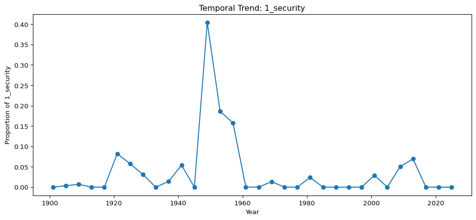
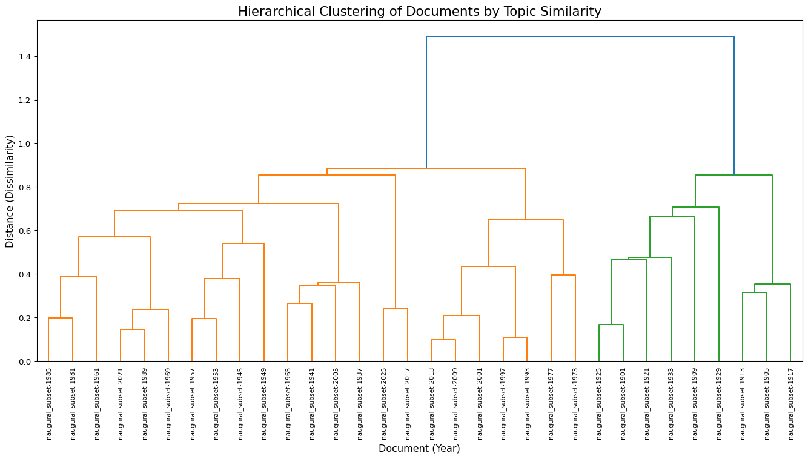
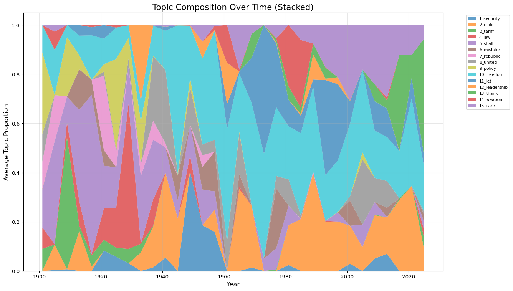

Imagine reading 10,000 newspaper articles about climate change. You want to know: What themes recur? Which articles discuss policy vs. science vs. activism? How do themes shift over time?
Topic modeling is an unsupervised machine learning technique that discovers abstract “topics” in large text collections. Unlike supervised methods (where you pre-define categories), topic models infer thematic structures directly from word co-occurrence patterns.
How it works (simplified):
Assume each document is a mixture of topics (a speech might be 60% “economy,” 30% “foreign policy,” 10% “education”)
Assume each topic is a probability distribution over all words in the vocabulary
Use an algorithm to infer both distributions from the data
The most common algorithm is LDA (Latent Dirichlet Allocation), developed by Blei, Ng, and Jordan (2003).
Why “Latent”?
Topics are latent (hidden) structures. They don’t exist explicitly in the text—the algorithm infers them from patterns of which words tend to co-occur across documents. This makes topic modeling powerful (discovers unexpected patterns) but also interpretively risky (topics are statistical artifacts, not authorial intentions).
Research questions topic modeling can help answer:
What themes appear in a corpus of historical newspapers?
How do topics shift over time (e.g., Cold War discourse 1950-1990)?
Which documents are thematically similar despite surface differences?
What distinguishes one author’s corpus from another’s in terms of topical focus?
Authorship attribution (unless topics correlate strongly with style)
Causal claims (“This topic caused this historical event”)
Interpretation without domain knowledge (topics are numbers until you make sense of them)
8.2 Understanding LDA
8.2.1 The Generative Story
LDA assumes documents are generated through this process:
Choose topic proportions for the document (e.g., 40% topic A, 30% topic B, 30% topic C)
For each word position:
Pick a topic according to those proportions
Pick a word from that topic’s distribution
The algorithm reverses this: given observed words, infer the hidden topic assignments and distributions.
8.2.2 Key Concepts
Topics: Probability distributions over words. Topic 1 might assign high probability to “government,” “congress,” “law,” “policy” (a “governance” topic).
Document-topic distribution: Each document’s mixture of topics. Document A might be 80% Topic 1, 20% Topic 2.
Topic-word distribution: Each topic’s mixture of words. Topic 1 might assign 0.08 probability to “government,” 0.06 to “congress,” etc.
Hyperparameters: - α (alpha): Controls document-topic sparsity. Low α → documents concentrate in few topics. - β (beta/eta): Controls topic-word sparsity. Low β → topics concentrate in few words. - k: Number of topics. Must be set in advance (or tested via evaluation).
8.2.3 What Makes a Good Topic?
Coherence: Top words should be semantically related. A topic with “school,” “student,” “teacher,” “education” is coherent. A topic with “school,” “dog,” “economy,” “yesterday” is incoherent (probably noise).
Distinctiveness: Topics should capture different themes, not overlap heavily.
Interpretability: Humans can assign meaningful labels (“education,” “war,” “economy”).
Statistical note: These are interpretive goals, not guaranteed algorithmic outcomes. LDA optimizes for likelihood, not human interpretability.
8.3 Workflow: From Texts to Topics
We’ll analyze U.S. Presidential Inaugural Addresses to discover thematic patterns.
Corpus with 32 documents in English
> inaugural_subset-1913 (1901 tokens): There has been a change of government . It began t...
> inaugural_subset-1921 (3753 tokens): My Countrymen : When one surveys the world about h...
> inaugural_subset-1929 (3891 tokens): My Countrymen : This occasion is not alone the adm...
> inaugural_subset-1925 (4442 tokens): My countrymen , no one can contemplate current con...
> inaugural_subset-1933 (2063 tokens): I am certain that my fellow Americans expect that ...
> inaugural_subset-1909 (5845 tokens): My fellow citizens : Anyone who has taken the oath...
> inaugural_subset-1905 (1090 tokens): My fellow citizens , no people on earth have more ...
> inaugural_subset-1937 (2021 tokens): When four years ago we met to inaugurate a Preside...
> inaugural_subset-1901 (2451 tokens): My fellow - citizens , when we assembled here on t...
> inaugural_subset-1917 (1656 tokens): My Fellow citizens : The four years which have ela...
(and 22 more documents)
total number of tokens: 77593 / vocabulary size: 7108
8.3.2 Preprocessing Pipeline
Why preprocess aggressively?
Topic modeling relies on word co-occurrence. Preprocessing removes noise (punctuation, ultra-common words, typos) to surface meaningful patterns.
# Lemmatize to group inflected formslemmatize(corp)# Lowercase for consistencyto_lowercase(corp)# Remove punctuationremove_punctuation(corp)print_summary(corp)
Corpus with 32 documents in English
> inaugural_subset-1913 (1901 tokens): there have be a change of government it begin two...
> inaugural_subset-1921 (3753 tokens): my countryman when one survey the world about he ...
> inaugural_subset-1929 (3891 tokens): my countryman this occasion be not alone the admi...
> inaugural_subset-1925 (4442 tokens): my countryman no one can contemplate current cond...
> inaugural_subset-1933 (2063 tokens): i be certain that my fellow americans expect that ...
> inaugural_subset-1909 (5845 tokens): my fellow citizen anyone who have take the oath i...
> inaugural_subset-1905 (1090 tokens): my fellow citizen no people on earth have more ca...
> inaugural_subset-1937 (2021 tokens): when four year ago we meet to inaugurate a preside...
> inaugural_subset-1901 (2451 tokens): my fellow citizen when we assemble here on the 4...
> inaugural_subset-1917 (1656 tokens): my fellow citizen the four year which have elapse...
(and 22 more documents)
total number of tokens: 77593 / vocabulary size: 5040
Critical preprocessing choice: Should we filter by part-of-speech?
Full vocabulary model:
topic_1
> #1. president (0.023343)
> #2. strong (0.021313)
> #3. heart (0.019960)
topic_2
> #1. economic (0.027413)
> #2. action (0.023987)
> #3. hold (0.021132)
topic_3
> #1. law (0.041958)
> #2. system (0.031293)
> #3. progress (0.029871)
topic_4
> #1. national (0.025714)
> #2. justice (0.021786)
> #3. good (0.021786)
topic_5
> #1. america (0.092663)
> #2. americans (0.043843)
> #3. century (0.028400)
topic_6
> #1. peace (0.062824)
> #2. shall (0.044392)
> #3. war (0.032354)
topic_7
> #1. right (0.040755)
> #2. power (0.034581)
> #3. united (0.031699)
topic_8
> #1. freedom (0.049676)
> #2. free (0.029401)
> #3. history (0.026698)
topic_9
> #1. business (0.024287)
> #2. congress (0.021252)
> #3. policy (0.020645)
topic_10
> #1. let (0.045623)
> #2. change (0.026395)
> #3. generation (0.021871)
Comparison question: Do the full-vocabulary topics include more verbs and adjectives? Do they feel more action-oriented or emotionally inflected compared to the noun-only topics?
The Interpretation Trap
Topics are probability distributions, not themes. Assigning labels is your interpretive act, not a discovery. Two researchers might label the same topic differently (“foreign policy” vs. “international conflict”). Always acknowledge this subjectivity.
8.5 Model Evaluation
8.5.1 Testing Multiple k Values
Which k is optimal? Too few topics → themes collapse together. Too many topics → fragmented, hard to interpret.
Inspect topics manually (do they make sense at different k values?)
Consider interpretive goals (5 topics for broad overview, 30 for granular analysis)
No “Correct” k
The optimal k depends on your corpus and research questions. A corpus of 50 documents might work best with k=5. A corpus of 10,000 might need k=100. Use evaluation metrics as guides, not rules.
8.6 Interpreting Results
8.6.1 Generate Topic Labels
# Select model with k=15 (balance between metrics)best_model = [m for k, m in eval_results_by_k if k ==15][0]['model']# Generate labels from top wordsvocab_full_array = np.array(vocab_full)doc_lengths_full = doc_lengths(dtm_full)topic_labels = generate_topic_labels_from_top_words( best_model.topic_word_, best_model.doc_topic_, doc_lengths_full, vocab_full_array, lambda_=0.6# Balance between word frequency and topic exclusivity (0=exclusive, 1=frequent))print(topic_labels)
Lambda parameter: Controls the trade-off between word frequency and topic exclusivity. Lower values (0.0-0.4) favor distinctive words unique to each topic. Higher values (0.6-1.0) favor frequent words regardless of distinctiveness. We use 0.6 to balance interpretability with representativeness.
8.6.2 Top Words per Topic
top_topic_words = ldamodel_top_topic_words( best_model.topic_word_, vocab_full, row_labels=topic_labels)# Examine one topicprint(top_topic_words.iloc[0])
from tmtoolkit.topicmod.model_io import ldamodel_full_doc_topicsdoc_topic_df = ldamodel_full_doc_topics( best_model.doc_topic_, doc_labels_full, topic_labels=topic_labels)doc_topic_df.head(10)
_doc
1_security
2_child
3_tariff
4_law
5_shall
6_mistake
7_republic
8_united
9_policy
10_freedom
11_let
12_leadership
13_thank
14_weapon
15_care
0
inaugural_subset-1901
0.000088
0.000088
0.089561
0.086930
0.154035
0.002719
0.110614
0.113246
0.330351
0.111930
0.000088
0.000088
0.000088
0.000088
0.000088
1
inaugural_subset-1905
0.003556
0.103556
0.000222
0.000222
0.420222
0.000222
0.186889
0.000222
0.000222
0.183556
0.000222
0.000222
0.000222
0.073556
0.026889
2
inaugural_subset-1909
0.007014
0.000036
0.538952
0.059080
0.103632
0.000036
0.000573
0.000573
0.241045
0.048882
0.000036
0.000036
0.000036
0.000036
0.000036
3
inaugural_subset-1913
0.000129
0.162291
0.021364
0.098584
0.372716
0.164221
0.000129
0.000129
0.058044
0.079279
0.042600
0.000129
0.000129
0.000129
0.000129
4
inaugural_subset-1917
0.000145
0.017498
0.045698
0.004483
0.648735
0.060882
0.000145
0.000145
0.000145
0.180188
0.032683
0.000145
0.000145
0.008821
0.000145
5
inaugural_subset-1921
0.082064
0.000056
0.044407
0.128089
0.173278
0.062817
0.302985
0.017629
0.029344
0.103821
0.055286
0.000056
0.000056
0.000056
0.000056
6
inaugural_subset-1925
0.057614
0.000049
0.036212
0.163149
0.163887
0.000049
0.062780
0.007429
0.371267
0.126986
0.000049
0.000049
0.000049
0.010381
0.000049
7
inaugural_subset-1929
0.030883
0.000053
0.058551
0.588986
0.149460
0.000053
0.000053
0.035626
0.083847
0.051436
0.000053
0.000053
0.000053
0.000053
0.000843
8
inaugural_subset-1933
0.000098
0.074768
0.035237
0.000098
0.275354
0.000098
0.048414
0.000098
0.174329
0.082089
0.003026
0.306101
0.000098
0.000098
0.000098
9
inaugural_subset-1937
0.014301
0.165720
0.003260
0.107361
0.243007
0.000105
0.077392
0.260358
0.003260
0.121556
0.001682
0.000105
0.000105
0.000105
0.001682
Computational reasoning question: If Obama 2009 and Kennedy 1961 both have high proportions in the “freedom” topic, does that mean they’re saying the same thing? Or does “freedom” mean different things in different Cold War vs. post-9/11 contexts?
8.6.4 Temporal Trends
Do topics rise and fall over time?
# Load metadata with yearsdf_meta = pd.read_csv("https://github.com/browndw/humanities_analytics/raw/refs/heads/main/data/data_tables/inaugural_subset.csv")doc_topic_df['year'] = df_meta['year'].values# Plot one topic over timetopic_col = topic_labels[0] # First topicplt.figure(figsize=(12, 5))plt.plot(doc_topic_df['year'], doc_topic_df[topic_col], marker='o')plt.xlabel('Year')plt.ylabel(f'Proportion of {topic_col}')plt.title(f'Temporal Trend: {topic_col}')plt.show()

Interpretation: Does the trend correlate with historical events? For example, does a “war” topic spike during WWI, WWII, and Cold War periods?
Comparative reasoning: Do some topics rise as others fall? Might suggest thematic displacement (e.g., “domestic policy” declining as “foreign policy” rises during wartime).
8.7 Visualizing Topic Distributions
8.7.1 Heatmap: Documents × Topics
Heatmaps reveal which documents emphasize which topics and which documents cluster together thematically.
from tmtoolkit.topicmod.visualize import plot_doc_topic_heatmap# Create heatmap of document-topic distributionsfig, ax = plt.subplots(figsize=(16, 10))plot_doc_topic_heatmap( fig, ax, best_model.doc_topic_, doc_labels_full, topic_labels=topic_labels)plt.title('Document-Topic Distribution Heatmap', fontsize=16)plt.tight_layout()plt.show()
Patterns to look for: - Horizontal bands: Documents dominated by one topic - Vertical stripes: Topics that appear across many documents - Blocks: Groups of documents sharing similar topic profiles
Interpretation question: Do speeches from the same era cluster visually? Do Republican vs. Democratic presidents show different topic emphases?
Dendrograms show which documents are most similar based on their topic distributions.
from scipy.cluster.hierarchy import dendrogram, linkage# Extract numeric topic proportionsdata_array = doc_topic_df[topic_labels].values# Compute hierarchical clustering (Ward's method minimizes within-cluster variance)# This produces compact, balanced clusters rather than chainslinked = linkage(data_array, 'ward')# Plot dendrogramplt.figure(figsize=(14, 8))dendrogram( linked, orientation='top', labels=doc_labels_full, distance_sort='descending', leaf_rotation=90)plt.title('Hierarchical Clustering of Documents by Topic Similarity', fontsize=16)plt.xlabel('Document (Year)', fontsize=12)plt.ylabel('Distance (Dissimilarity)', fontsize=12)plt.tight_layout()plt.show()

Reading the dendrogram: - Leaf nodes (bottom) = individual documents - Branch height = dissimilarity (taller = more different) - Clusters = documents joined at low heights are thematically similar
Interpretation: Do historical periods cluster together (all Cold War speeches in one branch)? Do clusters cross party lines, suggesting bipartisan consensus on certain topics?
8.7.3 Stacked Area Chart: Topic Evolution
Visualize how topic proportions change over time as a compositional whole:
# Create time-series matrix of topic proportionstopic_by_year = doc_topic_df.groupby('year')[topic_labels].mean()# Stacked area chartfig, ax = plt.subplots(figsize=(14, 8))ax.stackplot( topic_by_year.index, *[topic_by_year[col] for col in topic_labels], labels=topic_labels, alpha=0.7)ax.set_xlabel('Year', fontsize=12)ax.set_ylabel('Average Topic Proportion', fontsize=12)ax.set_title('Topic Composition Over Time (Stacked)', fontsize=16)ax.legend(loc='upper left', bbox_to_anchor=(1.05, 1), fontsize=8)ax.grid(True, alpha=0.3)plt.tight_layout()plt.show()

Interpretation: This shows the relative balance of topics. Does one topic dominate certain eras? Do topics become more evenly distributed over time (suggesting rhetorical diversification)?
Choosing Visualizations
Heatmap: Best for seeing all document-topic relationships at once. Good for exploratory analysis.
Dendrogram: Best for identifying document clusters and outliers. Useful for hypothesis generation about periodization.
Line plots: Best for temporal trends in specific topics. Ideal for hypothesis testing.
Stacked area: Best for understanding compositional changes (how the topic mix shifts over time).
Use multiple visualizations—they reveal different aspects of the same model.
8.8 When to Use Topic Modeling
Well-Suited Research Questions
Exploratory analysis: “What themes appear in this corpus I don’t know well?”
Corpus comparison: Do 19th-century novels emphasize different topics than 20th-century ones?
Temporal change: How did newspaper coverage of “immigration” shift from 1900-2000?
Document clustering: Group similar texts without reading all of them
Hypothesis generation: Identify patterns to investigate with close reading
Limitations and Alternatives
When topic modeling struggles:
Small corpora (< 100 documents): Not enough data for stable patterns
Short texts (tweets, headlines): Too few words per document
Manual coding: For small corpora, human annotation may be more accurate
Keyword analysis: If you know what you’re looking for, search directly
Clustering with embeddings: Use pre-trained models (BERT) for semantic similarity
BERTopic: Combines embeddings with topic modeling for better coherence on short texts
8.9 Common Pitfalls
1. Treating topics as “real”
Topics are statistical artifacts, not authorial intentions or cultural concepts. Don’t claim “18th-century writers believed in Topic 5”—they had no concept of it.
2. Ignoring model sensitivity
Change k, change preprocessing, get different topics. Always report modeling choices and test robustness.
3. Cherry-picking topics
Presenting only the 3 coherent topics out of 20 misleads. Report full results, including messy topics.
4. Over-interpreting probabilities
A document with 0.25 in Topic A isn’t “25% about that theme”—it’s a statistical weight, not a precise measurement.
5. Conflating co-occurrence with meaning
Words co-occur for many reasons (syntax, genre conventions, corpus artifacts). Topic coherence ≠ semantic unity.
6. Forgetting to triangulate
Never rely on topic modeling alone. Validate with close reading, metadata analysis, and domain expertise.
8.10 What to Do After Topic Modeling
8.10.1 Connect to Close Reading
Identify exemplar documents: Find speeches with high proportions in a topic
Read them closely: Does the topic label fit? What context is missing?
Refine interpretation: Adjust labels based on actual content
8.10.2 Connect to Historical Context
Do topic trends align with known events (wars, economic crises, social movements)?
Do unexpected patterns suggest overlooked historical dynamics?
How do topics relate to metadata (author, genre, publication venue)?
8.10.3 Iterate
Remove problematic words (names that dominate topics, corpus-specific noise)
Adjust preprocessing (try different POS filters, stopword lists)
Test different k values (broad overview vs. fine-grained analysis)
Compare algorithms (LDA vs. NMF vs. BERTopic)
8.10.4 Build On It
Supervised classification: Use topic distributions as features for predicting metadata
Network analysis: Connect documents via shared topics
Visualization: Create topic timelines, heatmaps, or interactive explorers
8.11 Troubleshooting Common Issues
“All my topics look the same”
Cause: k too small, or vocabulary too restricted
Fix: Increase k, relax stopword filtering, or use full vocabulary instead of POS-filtered
“Topics contain gibberish or proper names”
Cause: Insufficient preprocessing
Fix: Add custom stopwords (place names, character names), increase df_threshold for common words
“Topics are incoherent (random word lists)”
Cause: k too large, or corpus too heterogeneous
Fix: Reduce k, subset corpus by genre/time period, increase n_iter for better convergence
“Document-topic distributions are too uniform (every doc has equal proportions in all topics)”
Cause: alpha too high (documents encouraged to mix all topics)
Fix: Lower alpha (try alpha=1/k or alpha=0.1)
“Topics dominated by one or two words”
Cause: eta/beta too low, or corpus has strong term imbalance
Fix: Increase eta (try 0.1-0.5), or remove dominant terms from vocabulary
“Results change dramatically with random_state”
Cause: Model hasn’t converged, or corpus is too small
Fix: Increase n_iter (try 2000-5000), or collect more documents
Model Stability Check
Run the same model with 3-5 different random_state values. If topic assignments and labels remain consistent, your model is stable. If they change drastically, you need more iterations, more documents, or different preprocessing.
8.12 Conclusion
Topic modeling is a generative tool—it suggests patterns you didn’t know to look for. It’s not a confirmatory tool—it doesn’t prove hypotheses.
Use it to: - Survey large corpora quickly - Generate hypotheses for close reading - Discover unexpected thematic connections - Track topical change over time
Don’t use it to: - Make causal claims - Replace close reading - Assume topics reflect authorial intentions - Treat statistical patterns as cultural truths
The best topic modeling workflows combine: 1. Computational scale (process thousands of texts) 2. Statistical rigor (test multiple models, report uncertainties) 3. Interpretive depth (close reading, historical context, domain knowledge) 4. Methodological transparency (document all choices, acknowledge limitations)
Connecting to Mini Lab 9
Mini Lab 9: Topic Modeling provides hands-on practice with the complete workflow: preprocessing choices, model evaluation, topic labeling, and temporal analysis using U.S. presidential inaugural addresses.
Blei, D. M., Ng, A. Y., & Jordan, M. I. (2003). Latent Dirichlet allocation. Journal of Machine Learning Research, 3, 993-1022.
Mimno, D., Wallach, H., Talley, E., Leenders, M., & McCallum, A. (2011). Optimizing semantic coherence in topic models. Proceedings of the 2011 Conference on Empirical Methods in Natural Language Processing, 262-272.